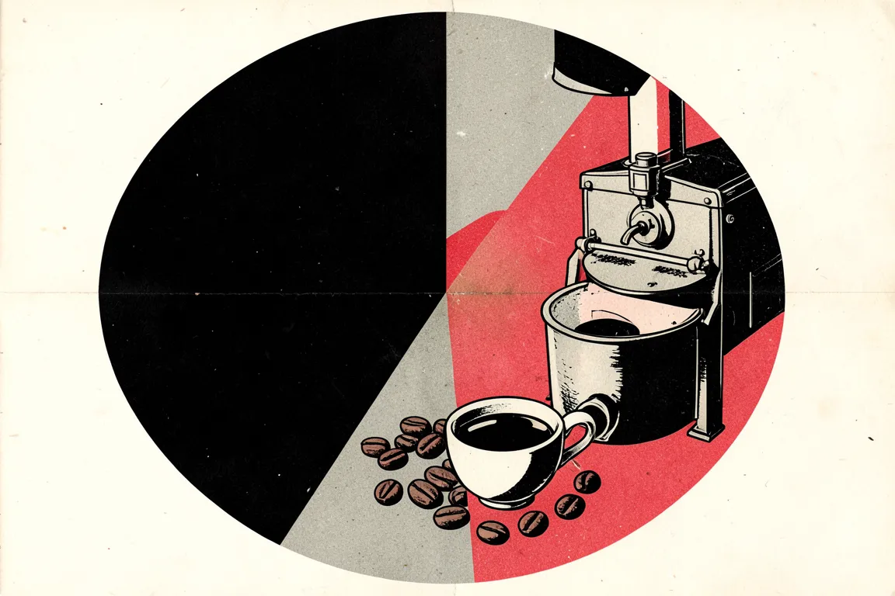

Diagonale komposisjoner, tung sans serif-skrift, fotomontasje og flate blokker i rødt, svart og krem. Stilen kom fra den sovjetiske avantgarden og behandler siden som en plakat som oppfordrer til handling.

Kjerneidé
Siden er en maskin for overtalelse: hvert element er en spak, og diagonalen gir det energi.
Designprinsipper
Sett hovedaksen i en hero i en vinkel på 15° til 30°; roter tekstblokker og bildeblokker sammen.
Bruk bare tre farger: rød (#D62718), svart (#111111) og krem (#EDE3CC); rødt dekker 25 % til 40 % av flaten.
Bygg overskrifter av tunge smale eller utvidede sans serif-versaler på 64px eller større, på 1 til 3 linjer.
Skjær fotografier til harde former (sirkel, trekant, stripe) og plasser dem i monokromt svart og rødt.
Bruk tykke staver på 12px til 24px og sirkler som struktur; hver stav peker mot neste handling.
La hver side ha én oppfordring til handling i en rød blokk, på 3 ganger størrelsen til brødteksten eller mer.
La minst to elementer overlappe i hver komposisjon med 8px til 40px.
Antimønstre
Sentrerte symmetriske layouter
Myke gradienter, skygger og glasseffekter
Pastellpaletter eller mer enn 3 farger
Serif- eller skriftstil som displayskrift
Avrundede beholdere og pillknapper
Dekorativ illustrasjon som ikke gir noen oppfordring til handling
Komposisjoner kun i horisontal retning uten diagonal